Missão
Promover o acesso à educação e incentivar o hábito da leitura.
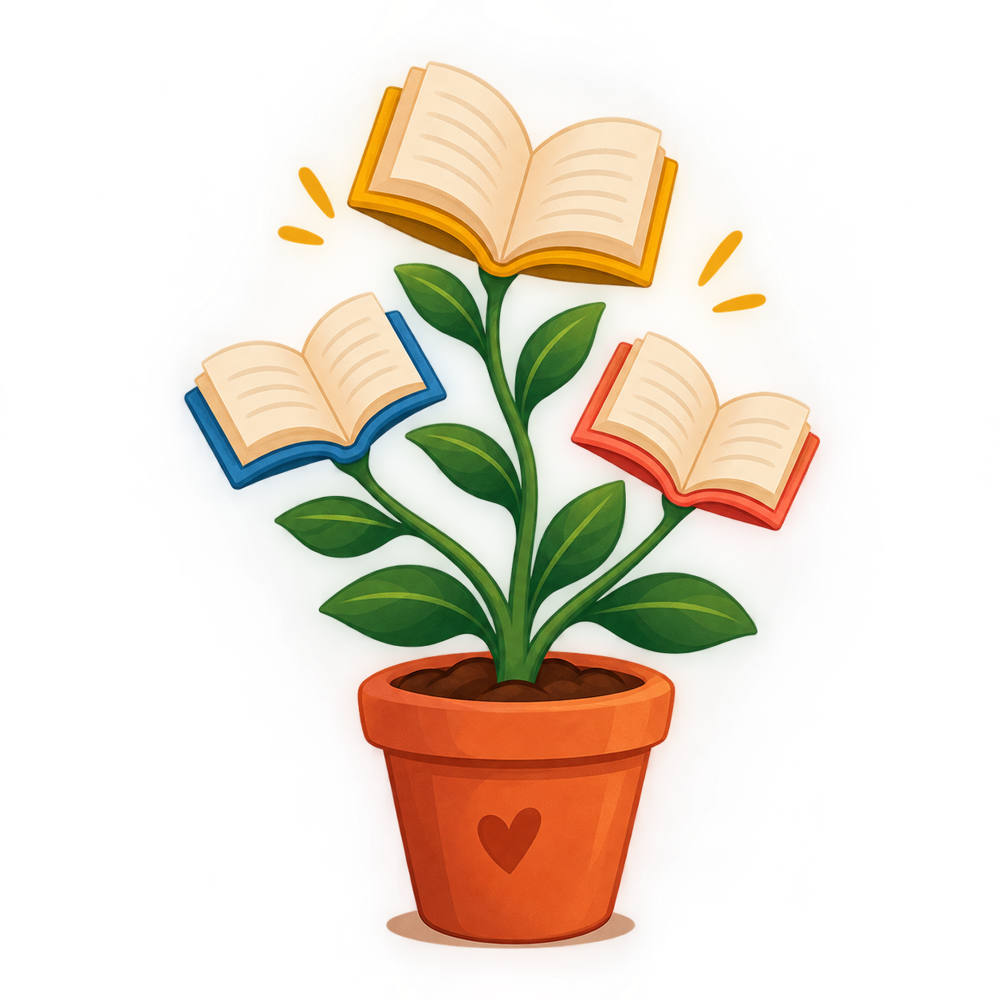
Sementes do SaberAcreditamos que cada criança tem um mundo inteiro para descobrir. Por meio da educação, da criatividade e da leitura, queremos ajudar a construir um futuro cheio de oportunidades.
Conheça nossos projetos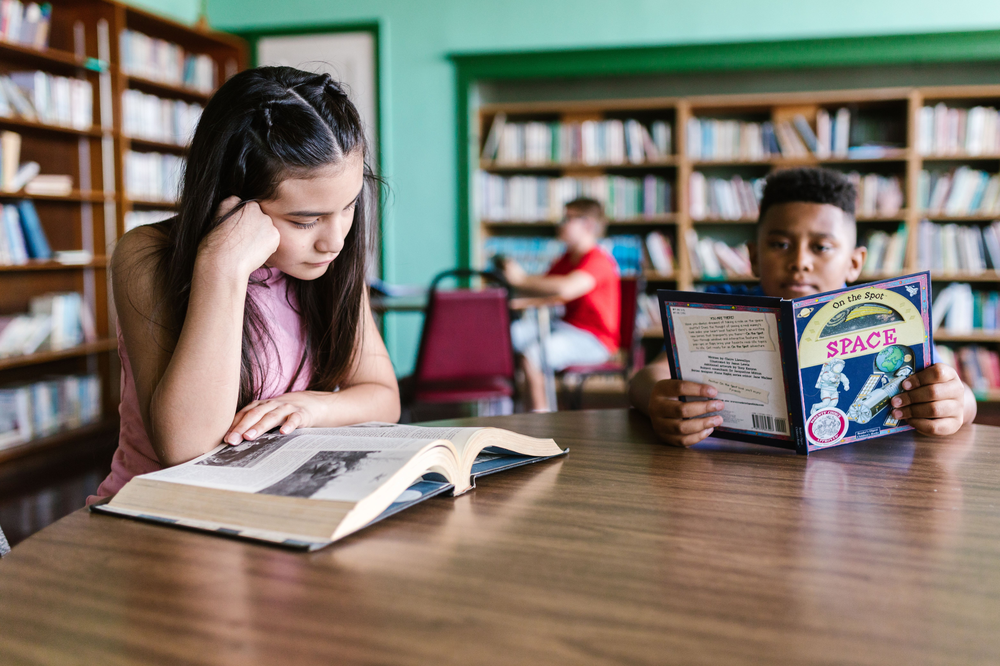
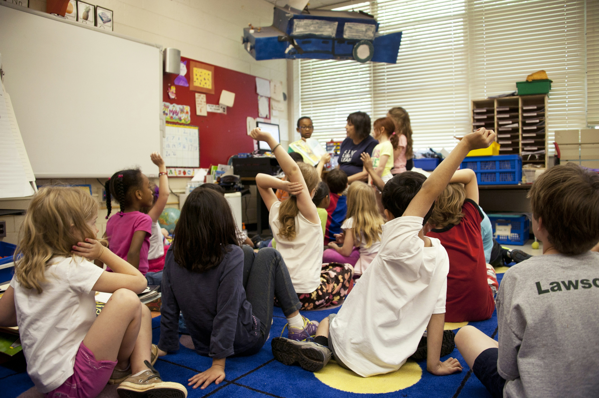
A Sementes do Saber é uma organização não governamental fictícia criada com o objetivo de incentivar a educação e ampliar o acesso ao conhecimento de crianças e adolescentes.
Acreditamos que aprender pode ser uma experiência divertida, acolhedora e capaz de abrir portas para novas oportunidades. Por isso, buscamos incentivar a leitura, a criatividade e a participação da comunidade.
Promover o acesso à educação e incentivar o hábito da leitura.
Contribuir para um futuro com mais conhecimento e oportunidades.
Solidariedade, respeito, inclusão e compromisso com a educação.
Iniciativas que estimulam o aprendizado e despertam novos talentos.
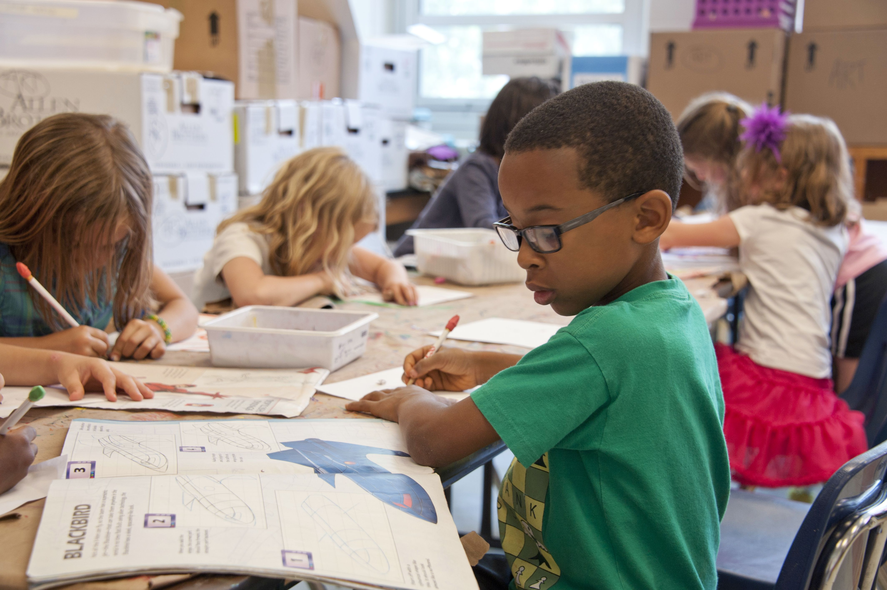
Atividades de reforço escolar que ajudam crianças e adolescentes a desenvolver suas habilidades e aprender de forma mais confiante.
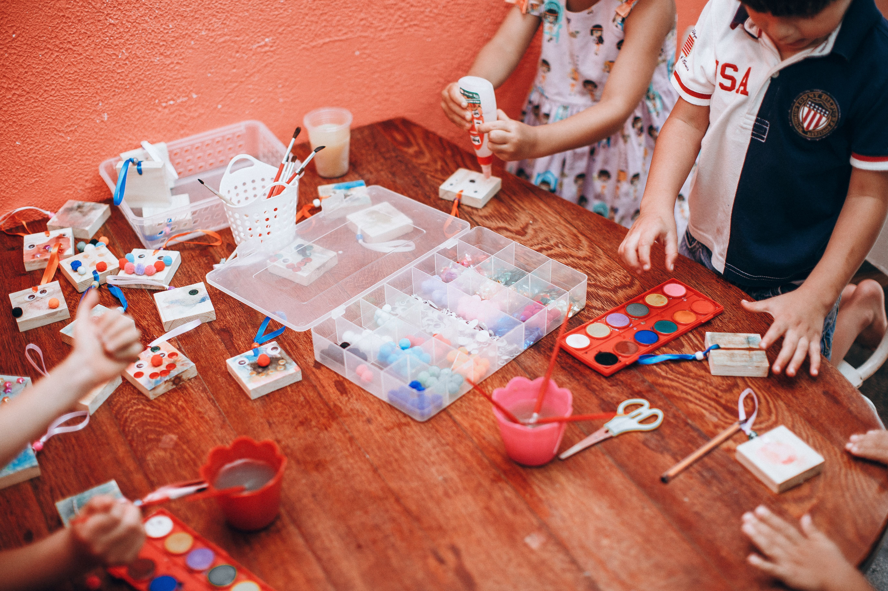
Momentos de desenho, pintura, jogos educativos e outras atividades que estimulam a imaginação e a expressão pessoal.
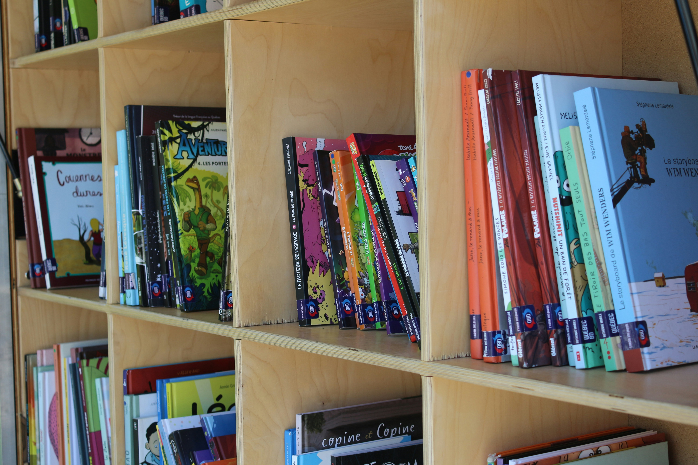
Um projeto para aproximar crianças e adolescentes dos livros, incentivar a imaginação e descobrir novas histórias.
Conheça o projetoUm livro pode ser o começo de uma grande aventura.
Queremos despertar o gosto pela leitura e mostrar que cada história pode nos ensinar algo novo. Por meio de rodas de leitura, recomendações de livros e campanhas de arrecadação, buscamos tornar os livros mais presentes no dia a dia de crianças e adolescentes.
Ajude a levar histórias adiante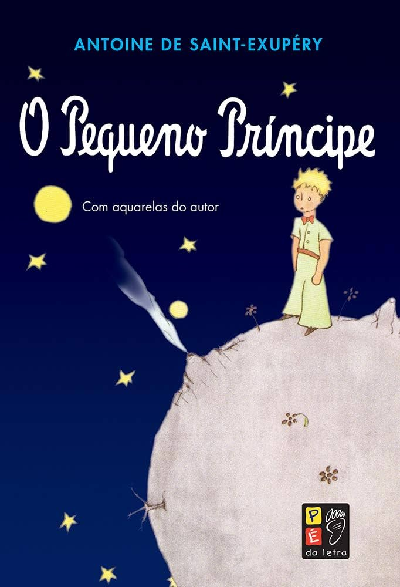
Antoine de Saint-Exupéry
Uma história que convida o leitor a refletir sobre amizade, afeto, responsabilidade e a maneira como enxergamos o mundo.
Aquele livro que marcou sua infância pode despertar a imaginação de outra pessoa. Doe livros infantis e juvenis em bom estado e ajude a formar novos leitores.
Um pouco das atividades educativas e das experiências que queremos promover por meio dos nossos projetos.
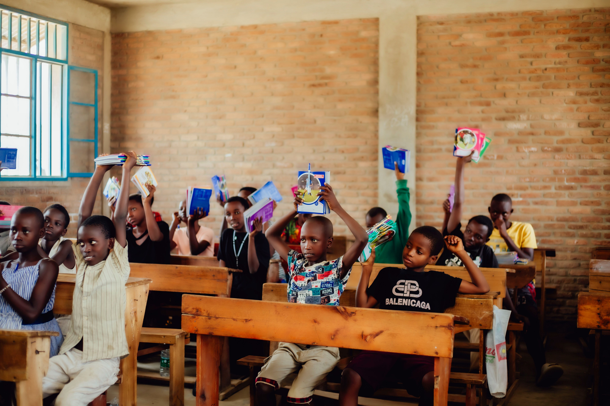
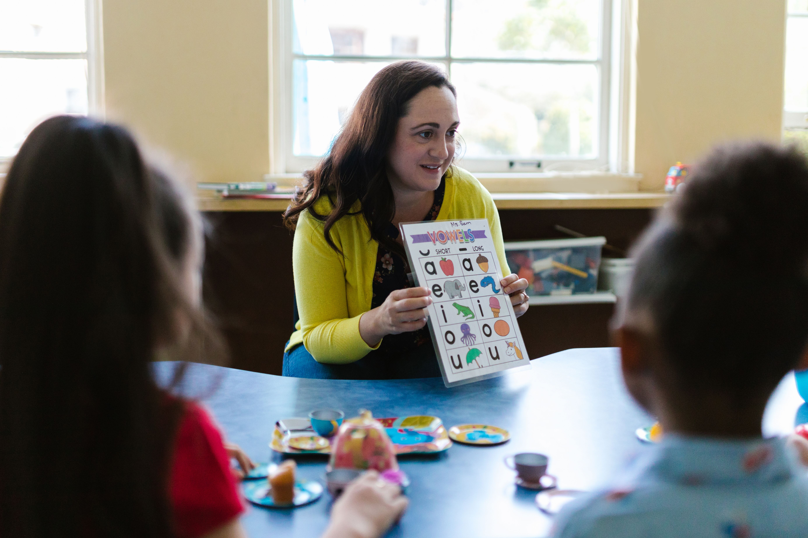
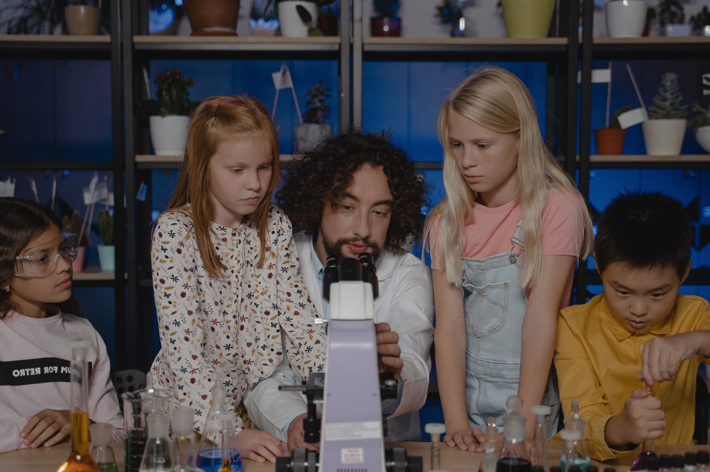
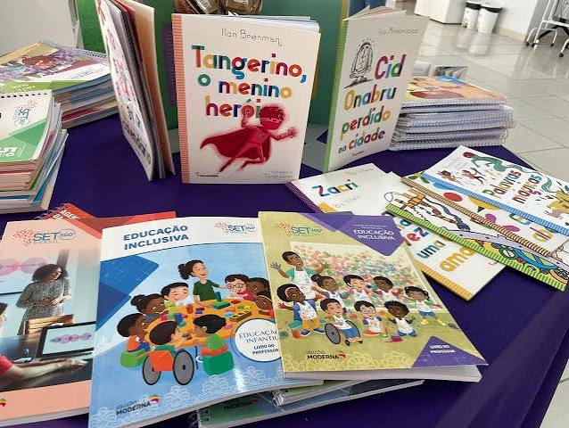
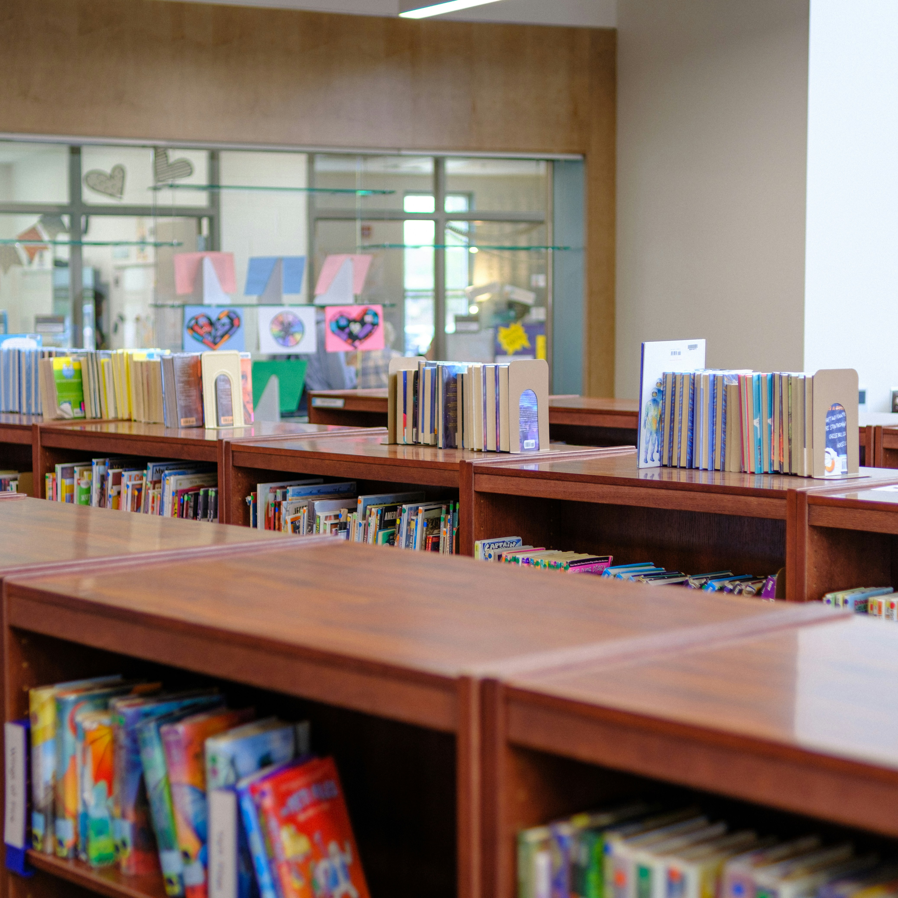
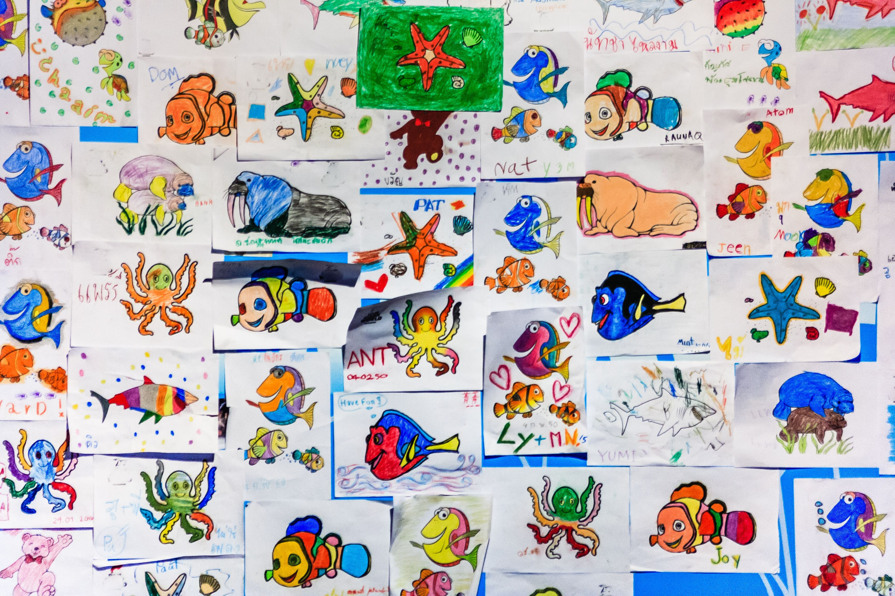
Toda contribuição pode fazer diferença na jornada de aprendizagem de uma criança.
Contribua com livros infantis, juvenis e clássicos da literatura em bom estado de conservação.
Cadernos, lápis, canetas e outros materiais podem apoiar nossas atividades educativas.
Compartilhe seu tempo e seus conhecimentos participando de atividades de leitura e aprendizagem.
Para combinar uma contribuição, entre em contato conosco. As informações desta página pertencem a uma ONG fictícia criada para fins acadêmicos.
Tem interesse em participar dos nossos projetos, doar livros ou conhecer melhor a Sementes do Saber? Envie sua mensagem.
E-mail: contato@sementesdosaber.org
Atendimento: Todos os dias de 6:00 ás 20:00